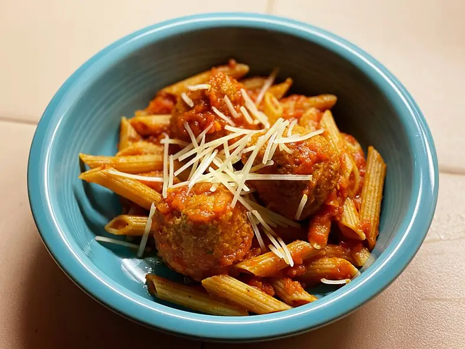

Фото: Missvain, CC BY 4.0

Тефтели из индейки в томате
Тефтели из индейки с овсянкой, тушёные в томатном соусе без зажарки
50 мин4 порц.300 ккал на порциюБ 29 · Ж 14 · У 15Русская кухня
Продукты на 4 порц.
- Фарш из индейки500 г
- Овсяные хлопья4 ст. л.
- Яйцо куриное1 шт
- Лук репчатый1 шт
- Морковь1 шт
- Томаты в собственном соку1 шт
- Томатная паста1 ст. л.
- Вода150 мл
- Лавровый лист2 шт
- Соль1,2 ч. л.
- Перец чёрный молотый2 щеп.
Как готовить
- Половину лука натрите на мелкой тёрке. Смешайте фарш, овсяные хлопья, яйцо, тёртый лук, половину соли и перец. Оставьте на 10 минут.
- Оставшийся лук мелко нарежьте, морковь натрите. Сложите в сотейник с помидорами в собственном соку, томатной пастой и водой.
- Доведите соус до кипения на среднем огне, посолите и добавьте лавровый лист.
- Мокрыми руками скатайте тефтели размером с грецкий орех и опустите в кипящий соус.
- Тушите под крышкой на слабом огне 25 минут, один раз аккуратно перевернув. Тефтели готовы, когда упругие и белые внутри.
Совет. Овсянка вместо риса держит форму и добавляет белка. На следующий день тефтели ещё вкуснее, храните в соусе до 3 дней.